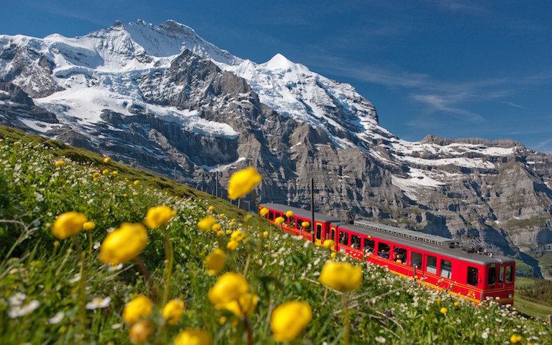
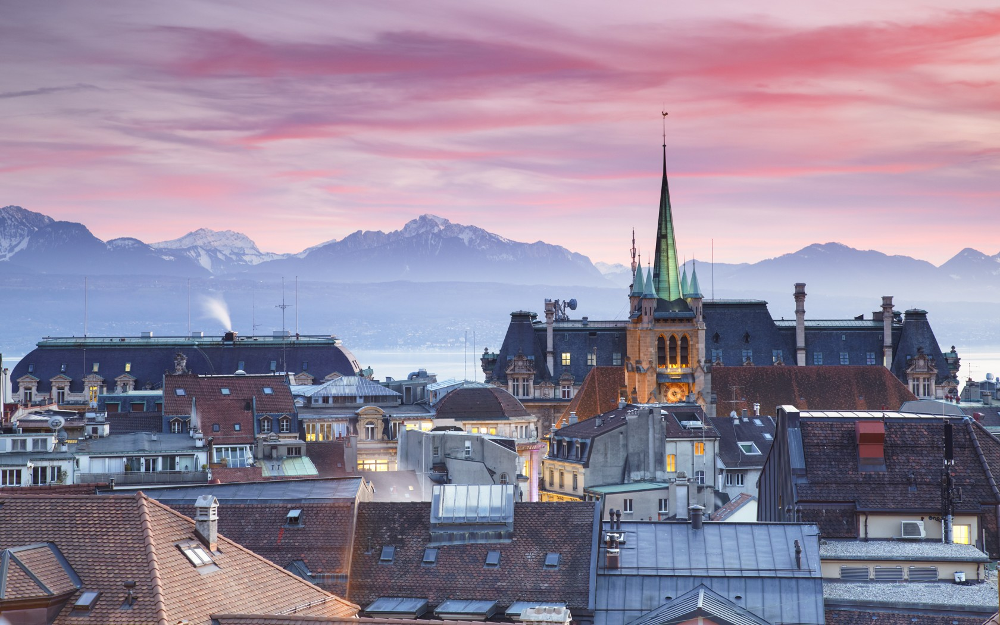
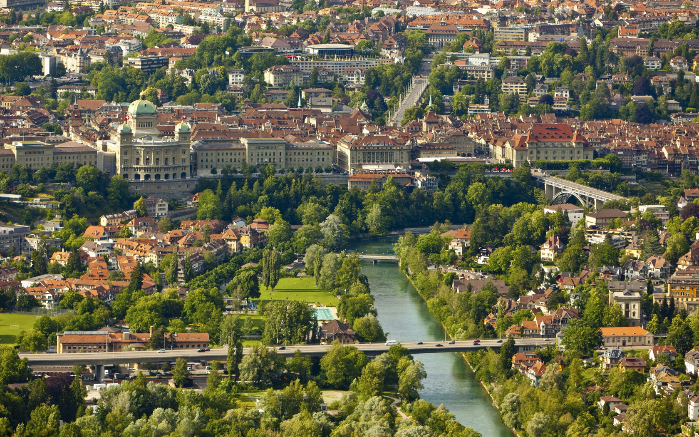
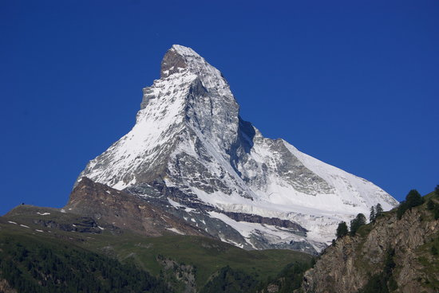
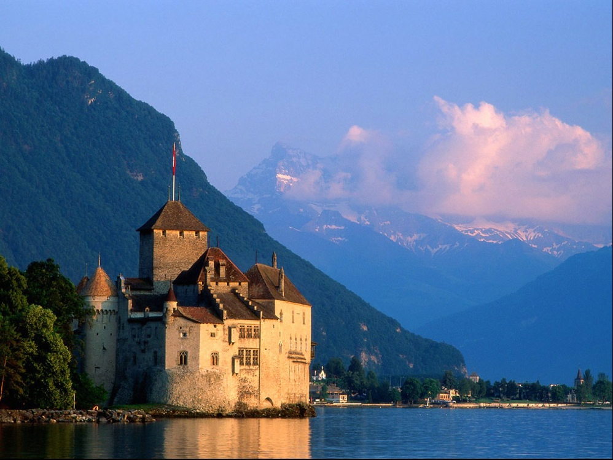

Whether you're planning to live in Switzerland or just visiting, here are 10 must-see sites in Switzerland.
The Jungfrau Region offers spectacular scenery to bewitch the eye. The white peaks of three towering mountains - the Jungfrau, Monch, and Eiger – contrast with the green valleys and meadows in this Alpine wonderland. Enjoy the fresh mountain air while visiting this place.
Lausanne, the second-largest city on Lake Geneva, combines a dynamic commercial town with the locality of a holiday resort. The capital of the canton of Vaud is also a lively university and convention town. Sports and culture are given a high profile in the Olympic capital.
The City of Bern is the political centre of Switzerland. It is well-known for its high quality of life, good cultural offering and tourist attracions. Bern is also home to international organisations and enterprises. It has gained itself a reputation as a place of research and science.
The Matterhorn and Switzerland are inseparably linked to each other. The pyramid shaped colossus of a mountain, which is very difficult to climb, is said to be the most-photographed mountain in the world. The Klein-Matterhorn ("Little Matterhorn"), which can be reached via a funicular, lies adjacent to the Matterhorn.
Chillon Castle is located on a rock on the banks of Lake Geneva. The water castle is the most visited historic building in Switzerland. For nearly four centuries Chillon was the residence and profitable toll station of the Counts of Savoy.
